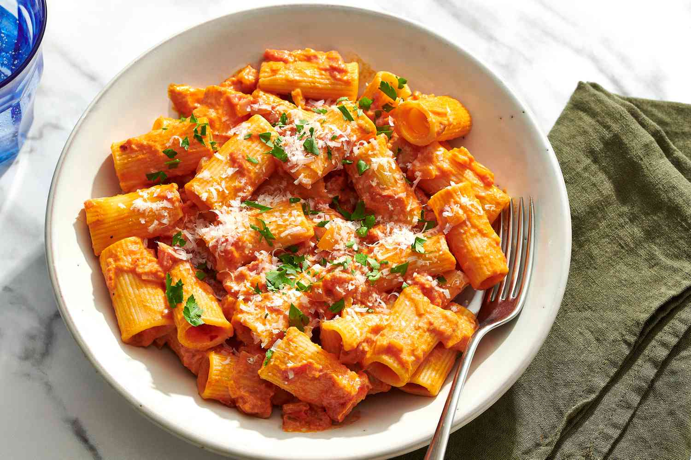
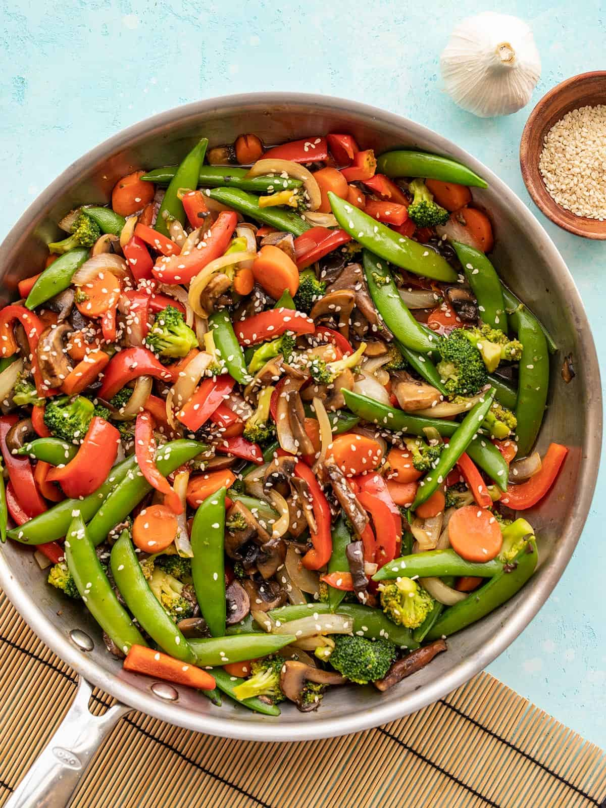

Entrée Recipes
Welcome to my collection of mouth-watering recipes! Explore the culinary delights below:
Recipe 1: Rigatoni Pasta
Ingredients:
- 1 lb rigatoni pasta
- 2 cups marinara sauce
- 1/2 cup grated Parmesan cheese
- Fresh basil leaves for garnish
Instructions:
- Cook rigatoni according to package instructions.
- Heat marinara sauce in a pan.
- Drain pasta and add it to the sauce.
- Toss to coat and simmer for 2-3 minutes.
- Sprinkle with Parmesan cheese.
- Garnish with fresh basil.
- Serve and enjoy!

Recipe 2: Grilled Chicken
Ingredients:
- 4 boneless, skinless chicken breasts
- 2 tablespoons olive oil
- 1 teaspoon dried oregano
- 1 teaspoon garlic powder
- Salt and pepper to taste
- Fresh lemon wedges for serving
Instructions:
- Preheat the grill to medium-high heat.
- In a bowl, mix olive oil, dried oregano, garlic powder, salt, and pepper.
- Brush the chicken breasts with the olive oil mixture.
- Grill the chicken for 6-8 minutes per side or until cooked through.
- Serve with fresh lemon wedges.
- Enjoy your delicious Grilled Chicken!

Recipe 3: Vegetarian Stir-Fry
Ingredients:
- 2 cups mixed vegetables (broccoli, bell peppers, carrots, snap peas, etc.)
- 1/4 cup soy sauce
- 2 tablespoons sesame oil
- 1 tablespoon ginger, minced
- 2 cloves garlic, minced
- 1 tablespoon cornstarch
- Cooked rice for serving
- Sesame seeds and green onions for garnish
Instructions:
- In a bowl, mix soy sauce, sesame oil, ginger, garlic, and cornstarch to create the sauce.
- Stir-fry the mixed vegetables in a pan until slightly tender.
- Pour the sauce over the vegetables and toss to coat evenly.
- Cook for an additional 2-3 minutes until the sauce thickens.
- Serve over cooked rice and garnish with sesame seeds and green onions.
- Enjoy your flavorful Vegetarian Stir-Fry!

Check out more exciting pages here: